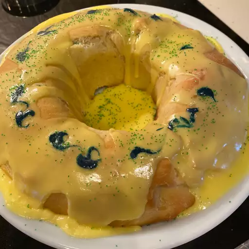

King cake

This a sweet bread that is made during Mardi Gras in New Orleans. It has a cream cheese filling and a simple glaze.
A tiny plastic baby baked into the bread and will bring good luck to whoever finds it
ingredients
-
2 teaspoons salt
-
1 teaspoon ground nutmeg
-
1 teaspoon grated lemon zest
-
½ cup white sugar
-
2 tablespoons milk
-
1 tablespoon multicolored candy sprinkles
-
4 cups all-purpose flour
-
1 cup warm milk (110 degrees F/45 degrees C)
-
½ cup butter, melted
steps
- dissolve yeast and white sugar in warm milk
- Stir the egg yolks and melted butter into the milk mixture
In a small bowl, combine the cream cheese
and 1/2 cup confectioners' sugar. Mix well
- Turn the dough out onto a floured surface
- Bake in preheated oven until golden brown
Home